前言
一直很想学Linux，但由于平时很忙，再加上我很讨厌枯燥的学习，就一直没有开始，前段时间灵机一动，可以通过安装配置Arch Linux的过程来顺便学习，配置完成后还能作为主力系统使用
我准备在我的笔记本上安装，目前有一块500g的固态装了Windows，一块1T的固态作为资料盘，这次准备在不影响Windows的情况下，在1T固态中安装ArchLinux并和Windows共用资料分区
准备
确定电脑启动类型
电脑启动类型分为传统BIOS和UEFI。双系统推荐UEFI/GPT，不推荐BIOS/MBR，因为引导容易出问题。Win11只支持UEFI启动，如果是老设备，可能还是传统BIOS
按下Win+R，输入msinfo32后回车打开系统信息，查看BIOS模式是UEFI还是Legacy
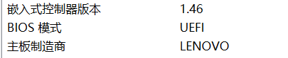
设置 Windows 时区偏移
Windows默认使用本地时间，而Linux默认使用UTC，这会导致两个系统的时间对不上。解决办法是在Windows里将硬件时间设置为UTC
管理员权限运行PowerShell，执行下面的命令
|
|
改完后可以确认一下，按 Win + R 输入 regedit 回车，进入下面的路径
|
|
右侧有下面的一行就是成功了，否则就是没生效
|
|
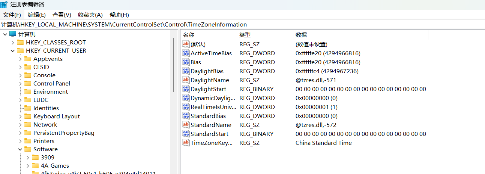
禁用快速启动和安全启动
Windows的快速启动本质上是将关机改为休眠。如果休眠了双系统中的其中一个，然后启动了另一个系统，那么在休眠的系统中已经被挂载的磁盘，不应该被挂载在另一个系统上，这样会导致文件系统错误，而如果 Windows 和 Linux 使用同一个 EFI 系统分区， EFI 系统分区可能遭到破坏，因此需要禁用快速启动。ArchLinux也不支持安全启动，需要一并禁用
进入控制面板>系统和安全>电源选项>选择电源按钮的功能，点击更改当前不可用的设置，然后取消勾选启用快速启动
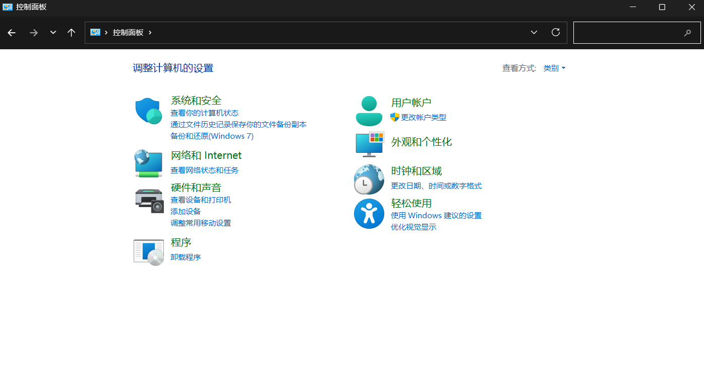
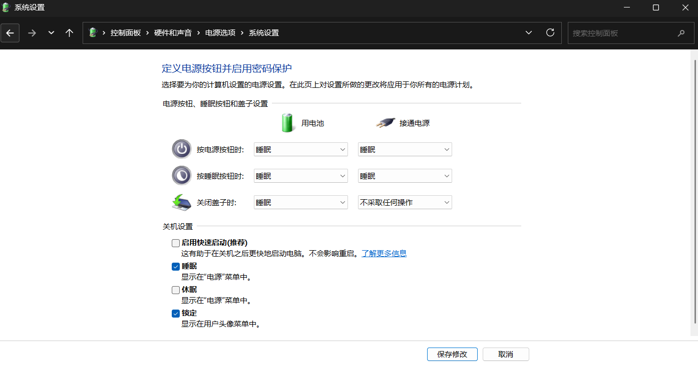
重启计算机，进入Bios，关闭安全启动(Secure Boot)，不同电脑方法不同。我的是开机时按F2进入Bios，点击更多设置，进入security，Secure Boot设置为Disabled，然后F10保存
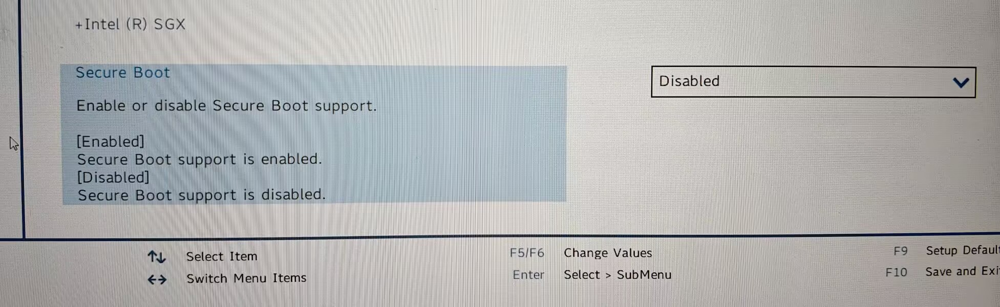
制作启动U盘
-
准备一个4G以上的空U盘
-
下载Arch Linux的系统镜像X86 64版本，推荐校验sha256与pgp签名
-
下载Ventoy的Windows版本
-
解压下载的Ventoy，运行
Ventoy2Disk.exe，在右上角配置选项中将分区类型改为GPT

- 选择U盘，点击安装，然后将archlinux的镜像复制进U盘

准备空闲的磁盘空间
由于我的1T固态中只有一个分区，因此我选择从空闲空间中压缩一部分空间来安装 Arch Linux。如果有多个分区可以考虑转移资料并删除其中一个分区
我使用的是微PE系统中的DiskGenius。首先选中需要压缩的分区，然后右键菜单栏点击调整分区大小
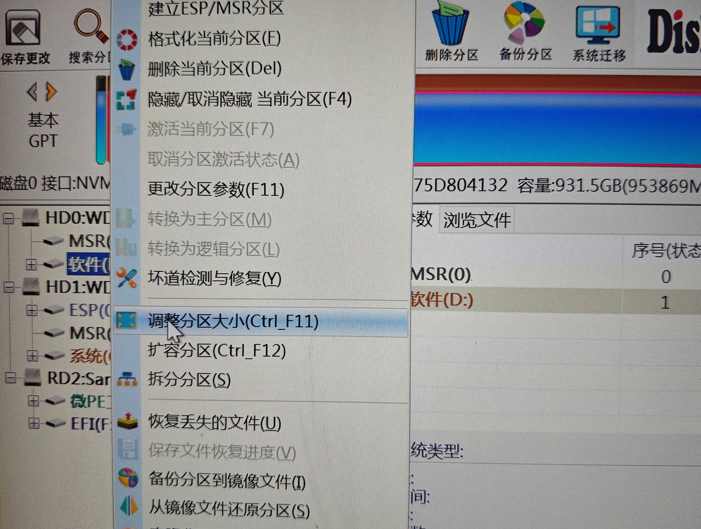
弹出的界面里，将分区后部的空间设置为需要的大小，然后点击开始并确认警告，压缩卷就完成了
这里建议留出50g以上大小的空间，否则存储数据的空间会很少
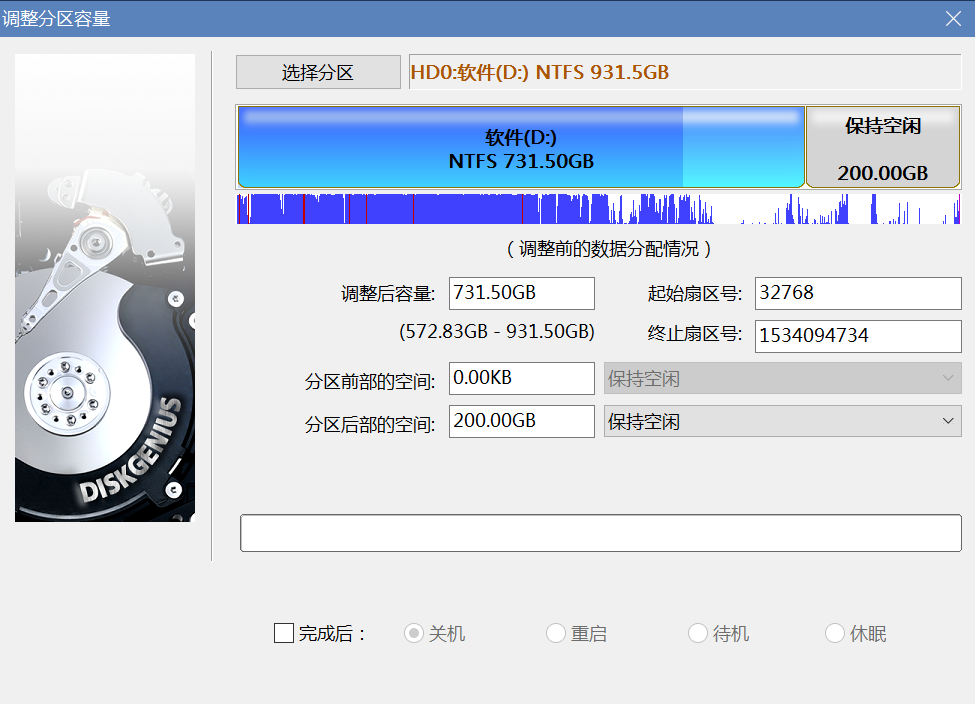
启动Arch Linux安装介质
将刚刚制作的U盘插在电脑上，重启按F12进入选择启动项的界面，选择U盘
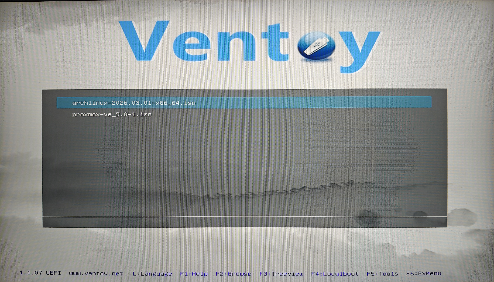
进入Ventoy界面，选择ArchLinux的镜像然后回车
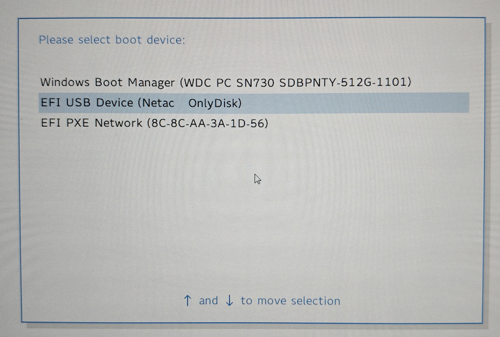
看到这个界面说明是UEFI模式启动的，回车即可
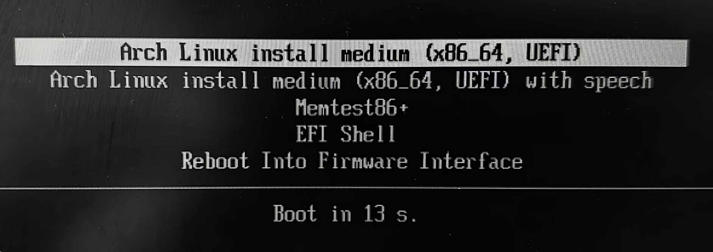
如果是左上角有一个archlinux图标的界面，而且启动项的结尾是BIOS，说明是用传统BIOS启动的，没有启动到UEFI模式，需要关机重新设置
等待一会进入这个界面说明启动成功
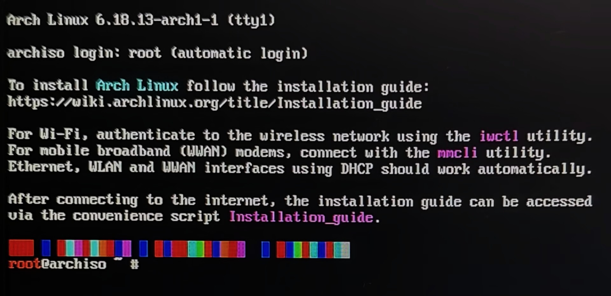
连接网络与时间校准
有三种常用的联网方式
- 直接插网线连接网络
- 如果电脑有无线网卡，可以通过 archiso 中的 iwd 连接 WiFi
- Android 手机给电脑 USB 共享网络
我这里使用的是iwctl连接wifi，先进入iwctl
|
|
输入下面的命令查看无线网卡设备名，比如wlan0
|
|
扫描可用网络，并将可用网络列出来，wlan0需要替换成上一步自己的网卡设备名
|
|
我在这里遇到了报错，原因是网卡被rfkill禁用，是关闭状态
如果报错 No station on device: 'wlan0' ，可以检查 device 的 Powered 状态，如果是 off，需要Ctrl+c 退出 iwctl 的 shell ，再通过下面的命令将wlan0的电源打开
|
|
如果报错Operation not possible due to RF-kill，说明网卡被rfkill禁用。有些电脑会自动禁用无线网卡和蓝牙，输入以下命令解除
|
|
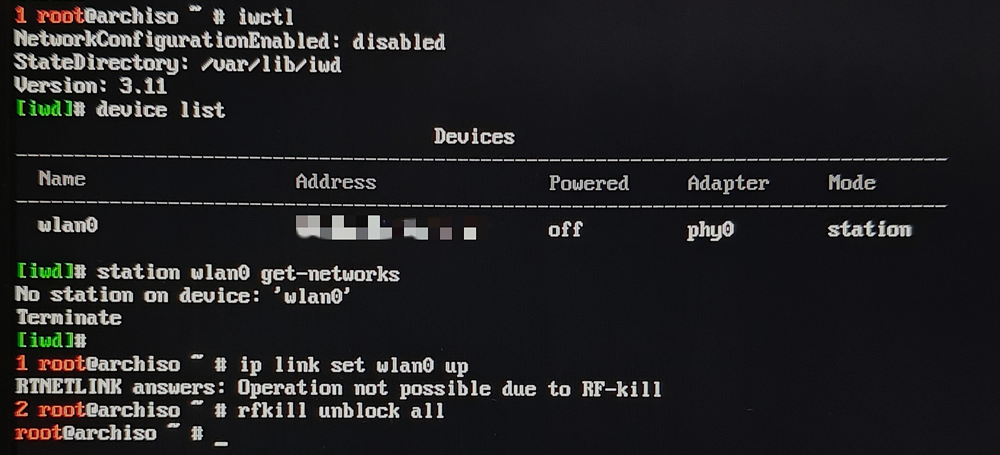
再重新进入 iwctl，连接 WIFI。device 需要替换成电脑网卡的设备名，SSID 需要替换成想连接的 WiFi 名
注意：shell不能识别中文和名字中的空格，因此WiFI的名称和密码只能由英文字母，数字和常见符号组成，且不能有空格。如果不符合命名规范，修改后等待信息刷新，重新连接即可
|
|
如果 WiFi 有密码，这里会提示输入密码，输入 WiFi 密码后回车
连接后输入 exit 退出iwctl，测试是否成功联网，ping一下任意可直连的网址
|
|
如果已连接上网络，输出会像下图一样是一些延迟数据，否则就是没有连接成功或者网络不可用。按Ctrl+C终止进程
在 Linux 中，
Ctrl+C可以近似理解为强行终止当前终端的活动进程
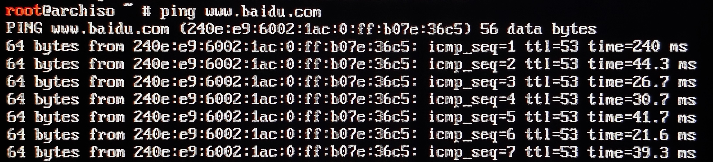
输入下面的命令设置时间为 UTC 并完成 NTP 时间同步
|
|
输入下面的命令进行检查，NTP service显示为active状态说明时间同步服务正常运行。正确的系统时间对于安装部分软件包是必须的
|
|
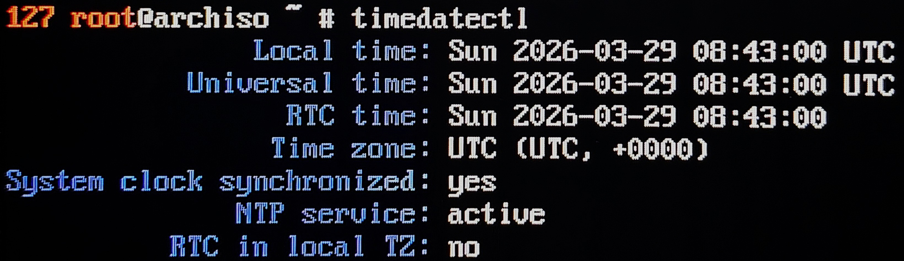
如果显示inactive，说明没有正常运行，输入下面的命令开启
|
|
磁盘配置
这部分是整个安装过程中最麻烦最复杂的部分，一定要细心配置
查看磁盘信息
输入fdisk -l查看当前电脑磁盘的详细状态
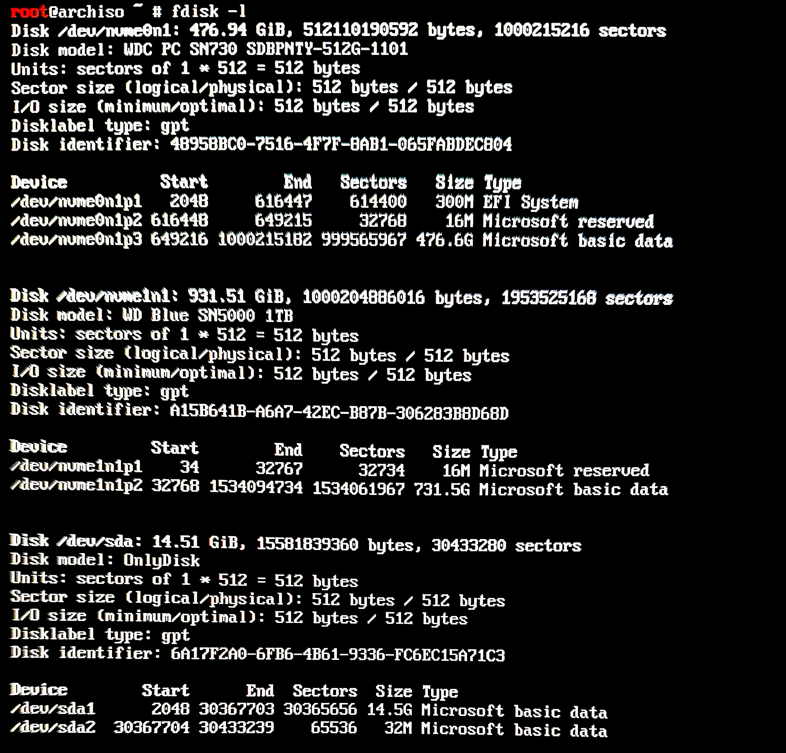
或者输入lsblk，查看当前电脑磁盘的简要状态
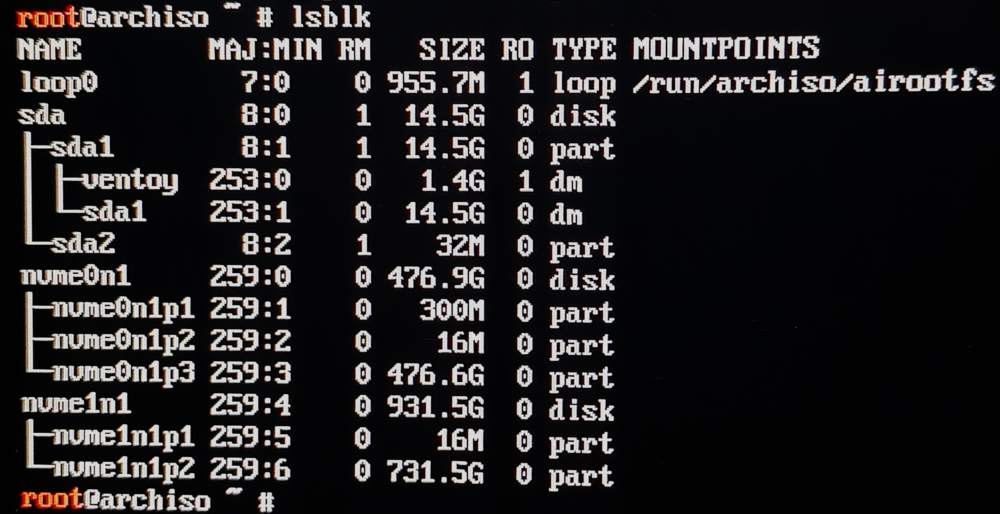
/dev/sdX：代表通过 SATA / USB 接口连接的存储设备，可能是机械硬盘或 SATA 固态
/dev/nvme0n1：代表NVMe SSD
/dev/mmcblk0：代表eMMC 存储
以/dev/nvme0n1p1 中的数字为例：
nvme：设备类型0：第几个 NVMe 控制器n1： 该控制器下的第几个命名空间p1： 第几个分区
我即将分区的盘是/dev/nvme1n1，这里只会显示已分区的空间，所以看不到空闲空间
分区
分区方法
在安装 Linux 时，磁盘需要划分几个区域来存放不同类型的数据。初学者可以简单分三个区：启动区、交换区和根区，用户区可以选做
启动区 /boot
这是电脑启动 Linux 时必须用的空间，用来存放启动程序和内核文件。UEFI 系统一定要有这个区，建议 512MB 左右，BIOS 系统可以不单独分区。双系统安装时，可以直接用 Windows 的 EFI 分区，但 Windows 的分区通常很小（100MB），可能不够用，而且 Windows 更新可能会破坏 Linux 的启动，所以更稳妥的做法是给 Linux 单独分一个 EFI 分区。
交换区 /swap
相当于 Linux 的备用内存，系统在内存不足时会用它来临时存数据。不是 Windows 的虚拟内存，但功能有点类似。建议至少 2GB，如果电脑内存小于 2GB，可以设置成内存的两倍；内存大于 2GB，一般 4GB 就够了。也可以用交换文件替代，不一定非要分区
根区 /
这是系统和软件的主要存储区。如果不单独划 /home，所有系统和用户数据都会放在这里。建议留至少 20GB，大小可以根据你的需求和剩余空间调整。
用户区 /home（可选）
用来存自己的文件和数据。没分的话，所有数据都在根区，相当于 Windows 的 C 盘；单独分出来就像 D 盘或者 E 盘，可以避免系统问题影响个人数据。新手可以不分这个区，有经验或者有特定需求的人可以单独分 /home，把剩余空间都给它。
推荐的分区方式：
| 挂载点 | 分区 | 分区类型 | 推荐大小 |
|---|---|---|---|
| /mnt/boot | /dev/efi_system_partition | EFI 系统分区 | 至少 300MB |
| [SWAP] | /dev/swap_partition | Linux swap | 大于512MB |
| /mnt | /dev/root_partition | Linux x86-64 root (/) | 设备的所有剩余空间 |
操作
注意：不同电脑的磁盘和分区不一样，所以下面要根据自己实际情况来
进入cfdisk
|
|
如果之前的步骤正确，这里可以看到绿色的Free space，这就是在 Windows 中压缩给 Arch Linux 的空间。 将光标通过键盘上下方向键移至Free space，再通过键盘左右方向键选择[New]，输入分区大小，回车后就建立成功了
我准备分3个区，一个是1G的efi分区，一个是8G的swap分区，一个是195g的数据分区
由于我的Linux安装在磁盘的尾部空间，为了之后方便扩容或者给资料分区让出空间，我分区的顺序是数据，swap，efi
将光标移到freespace，用同样的方法再新建好其他分区，然后将光标移到type，将分区类型改成上面表格对应的类型
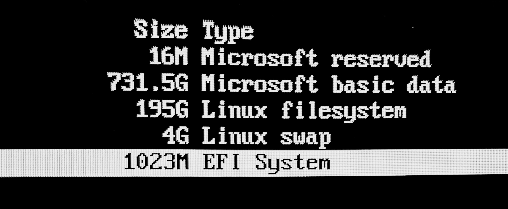
使用左右方向键选择Write，输入yes回车，然后Quit；
最后使用lsblk命令复查一下分区结果
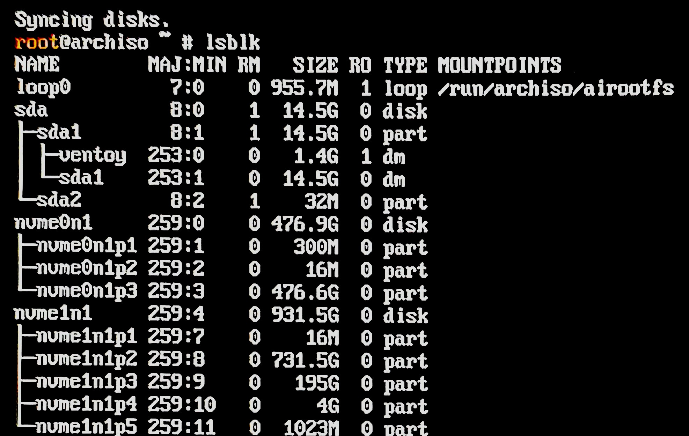
格式化
格式化/mnt分区：
|
|
格式化/boot分区，为了通用性，建议将该分区格式化为fat32格式：
|
|
初始化/swap分区：
|
|
格式化/home分区：
|
|
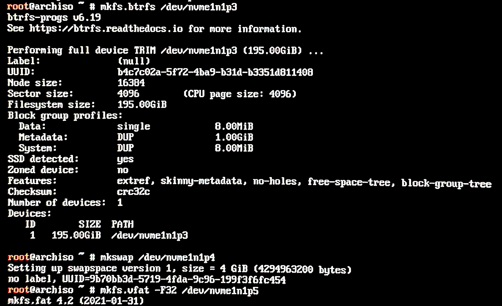
挂载
挂载/mnt分区：
|
|
挂载/boot分区：
|
|
/swap分区无需挂载，但是需要进行启用：
|
|
建立/home分区目录并挂载分区：
|
|
输入lsblk命检查磁盘分区情况，可以看到每个分区后面出现了挂载的目录
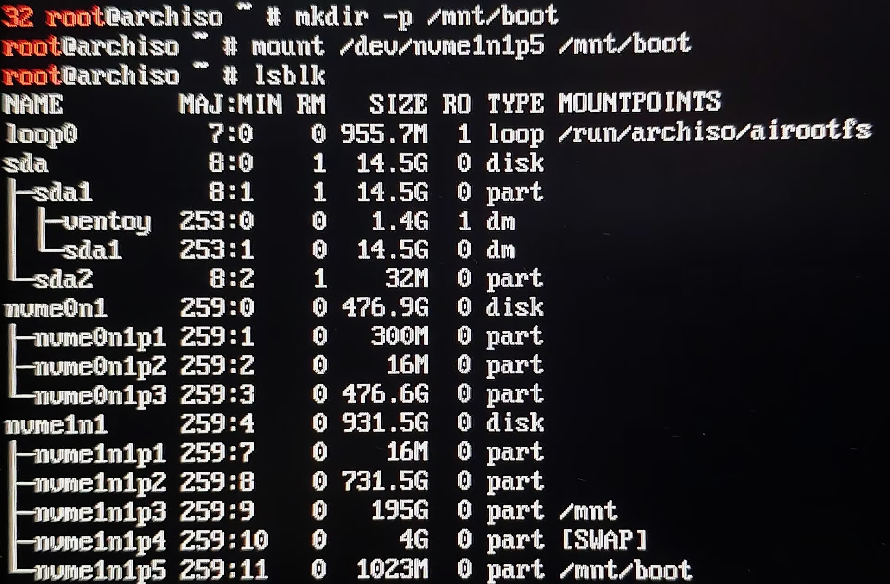
如果发现挂载目录错误，可以卸载后重新挂载，如卸载mnt/boot的命令是
|
|
下载软件包
禁用reflector
reflector会在最新的20个镜像源中测速，并根据速度排序镜像；由于大陆的特殊网络环境，只考虑最新的20个镜像源往往得不到理想的结果，同时它还会覆盖自行配置的源信息，所以先将其禁用：
|
|
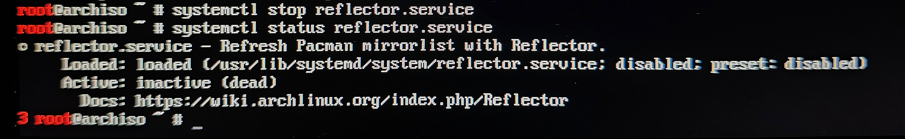
换源
这里我首先参考这个教程换了cernet源，但下载时会报错找不到文件，而且速度极慢，说明至少在我的环境中，这个源不可用，因此我最后改成了清华源
编辑源的列表
|
|
输入7j也就是将光标下移7行，按yy复制整行，输入3k上移3行，然后按p粘贴，输入4w向右移动4个单词，输入c7w，然后输入mirrors.tuna.tsinghua.edu.cn
|
|
Esc退出编辑模式，:wq保存退出。
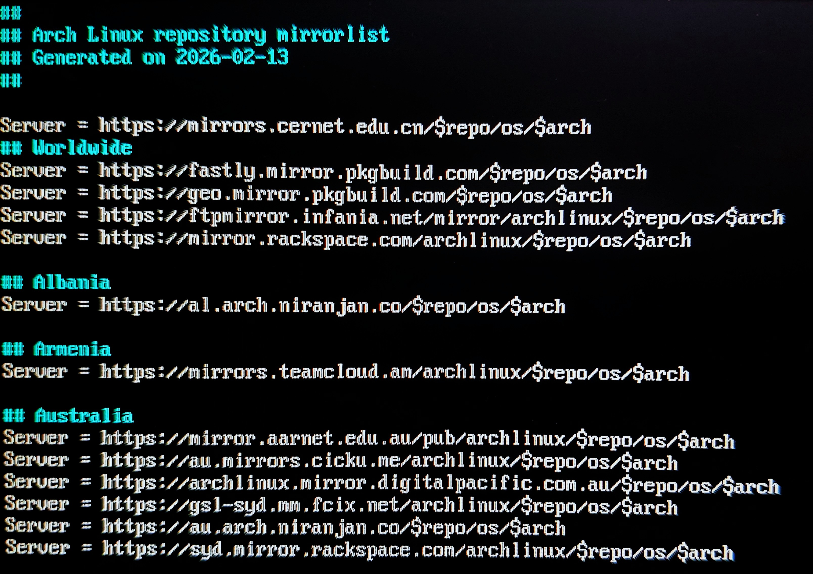
下载
|
|
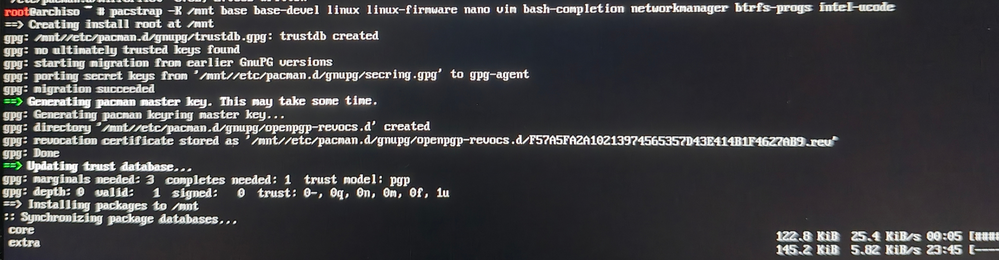
下载完成后，基本的安装就完成了
生成fstab文件
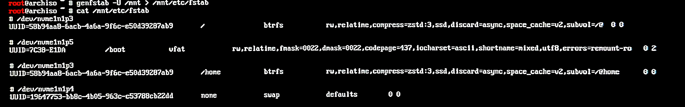
安装后基础配置
输入下面的命令进入安装好的系统环境，提示符由 root@archiso ~ # 变为 [root@archiso /]#
|
|
联网
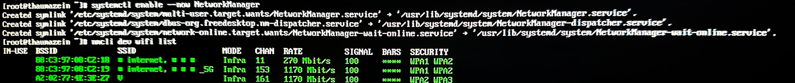
用户设置
目前登陆的用户是root，为其设置密码
|
|
输入密码不会显示，需要输入两次
archLinux是多用户系统，root用户拥有最高权限，甚至可以rm -rf /*删除系统本身，因此需要创建一个普通用户，以防误删重要文件
|
|
设置密码
|
|
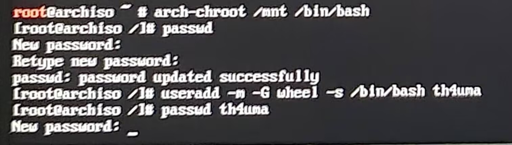
为了让普通用户能获取临时 root 权限，需要修改 wheel 的权限设置，首先打开sudoers文件
|
|
找到以下两行，将wheel取消注释。去掉#，但务必保留%
|
|
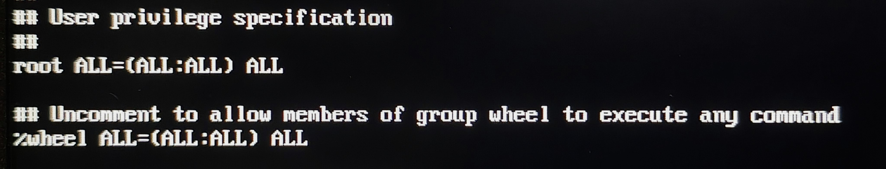
然后Esc退出编辑模式，:wq保存退出
为电脑设置主机名，注意名字不能包含空格
|
|
配置host
配置这一步是为了，如果不设置可能会在网络变更时出现应用无法启动等问题
|
|
写
|
|
如果系统有一个永久的 IP 地址，请使用这个永久的 IP 地址而不是
127.0.1.1
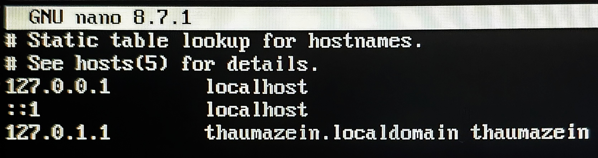
确认无误后，按Ctrl + X，输入y，回车再退出
设置时区
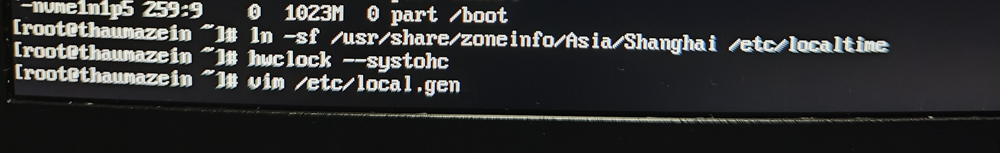
本地化
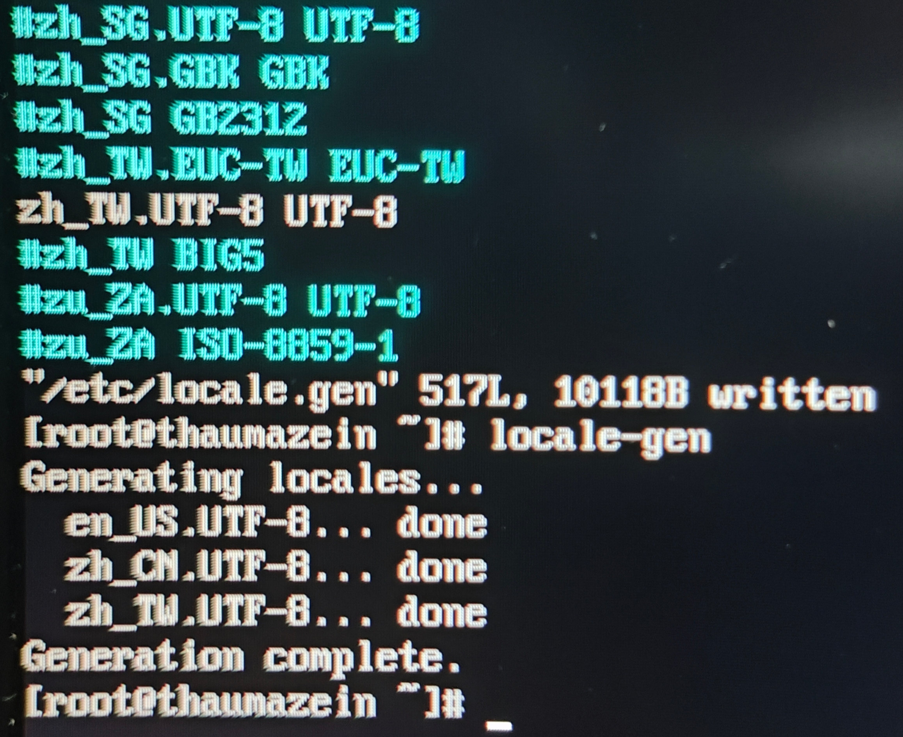
GRUB引导配置
基本配置
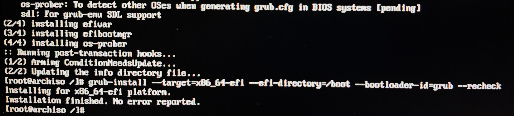
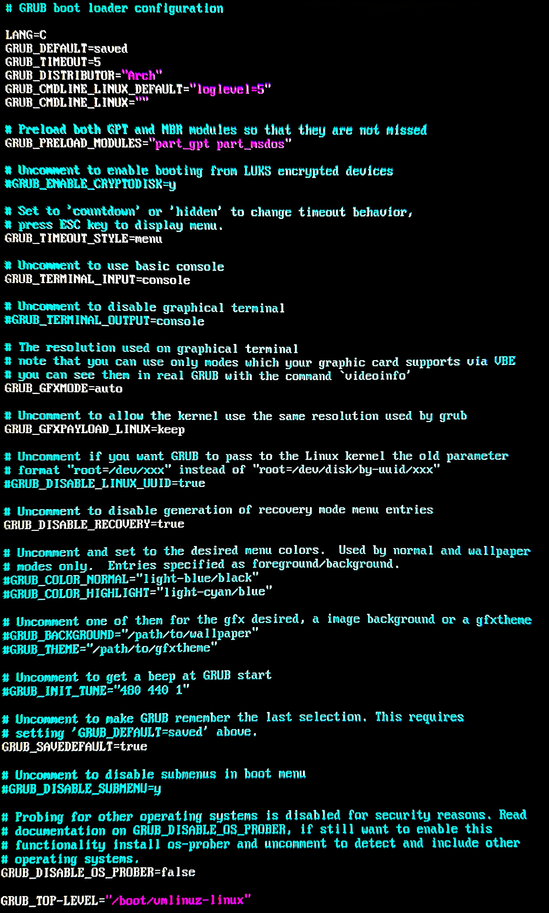
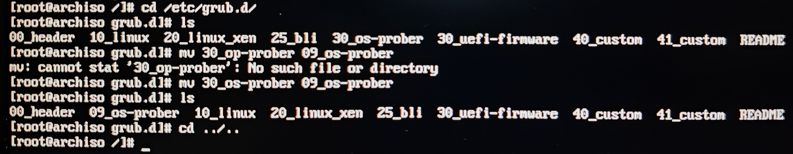
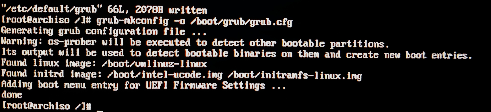
引导加入Windows
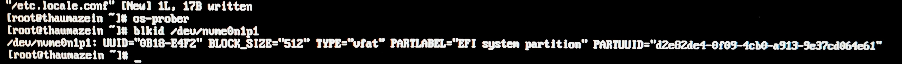
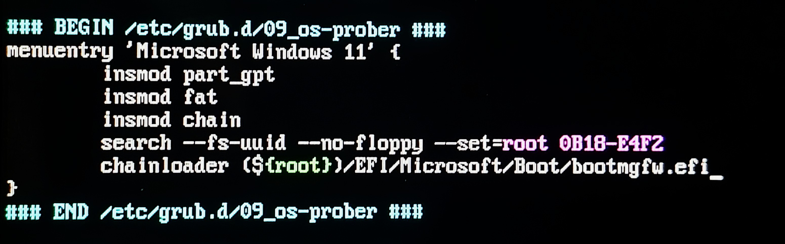
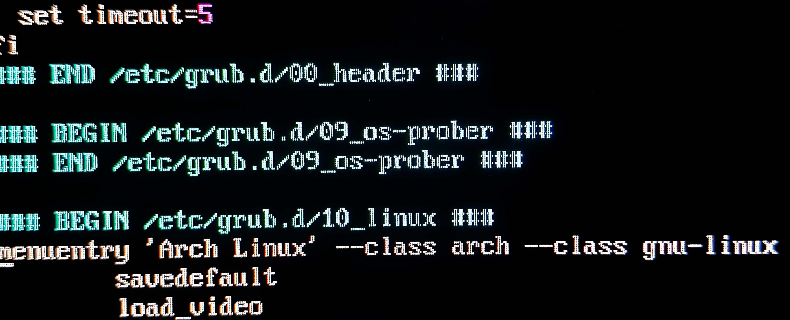
参考
Windows+Arch Linux双系统基本安装 - 团子的血域城堡